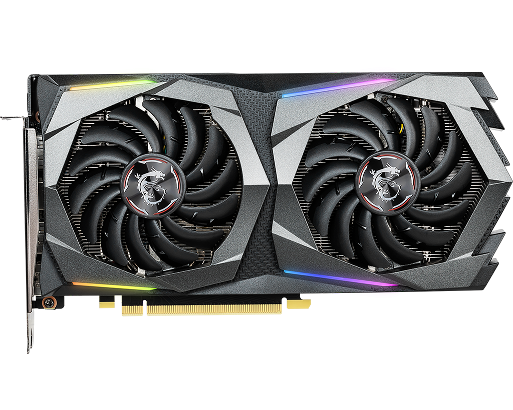
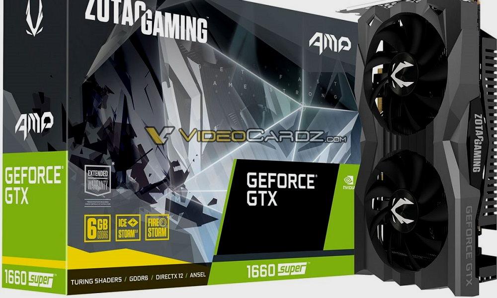
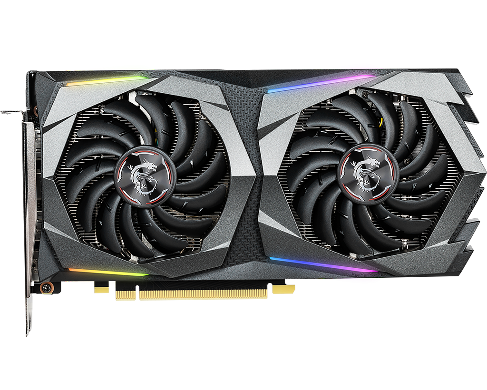
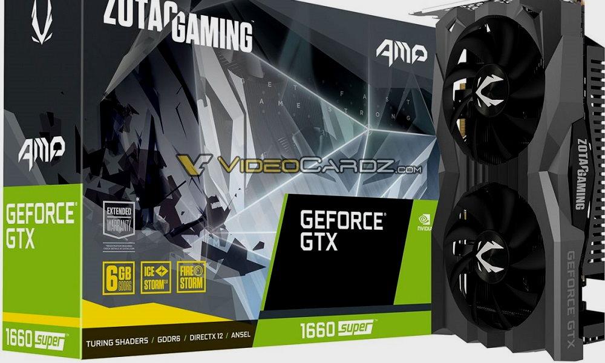

Una tarjeta gráfica (También conocida como tarjeta de video, placa de vídeo, o adaptador de pantalla) es una
tarjeta de expansión de la computadora que contiene una unidad de procesamiento gráfico que procesa datos de
salida gráfica a un dispositivo de visualización, como un monitor.
Las tarjeta gráficas son comúnmente usadas para jugar a videojuegos, usar software multimedia como software de
edición de imágenes, de edición de video, de modelado 3D, o minar criptomonedas.
Algunas tarjetas gráficas han ofrecido funcionalidades añadidas como sintonización de televisión, captura de
vídeo, decodificación[1] MPEG-2 y MPEG-4, o incluso conectores IEEE 1394 (Firewire), de mouse, lápiz óptico o
joystick.